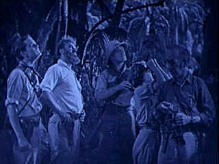

| Lost
World, The (SE)/B+,C+ |
| Image/1925/93/FS 1.33/BW |
The Lost World on DVD is billed as the most complete version since its
1925 theatrical release. It's a solid but standard adventure yarn based on the novel by Sir Arthur
Conan-Doyle. The silent film images are broken by frequent use of title cards for written dialogue.
I never realized that staccato use of these cards can break the flow of a film, however, such is
the case.
Professor Challenger, a gruff explorer. returns from an expedition to the
Amazon jungle with fantastic claims of prehistoric beasts hidden away deep int he jungle.
Unfortunately, his photographs have been irreparably damaged by water. As Challenger presents his
findings to an skeptical assembly of the London scientific community, he's greeted by ridicule.
Challenger challenges his audience to volunteer to return to the jungle with him in an attempt to
prove his claims.
 |
| Look, it's a bird, it's
a.....©Image |
Reporter Edward J. Malone and Sir John Roxton quickly agree to join
Challenger for different reasons of the heart. Paula White, whose father Maple White was lost int
he jungle on Challenger's expedition, also returns to the jungle to find dear old dad.
The action is pretty stiff and the romance never ignites beyond title card
interruptus, yet the simple adventure tale unfolds with an elegance beyond the individual scenes
and plot development.
The stop animation action work of legendary Willis H. O'Brien is very effective
and the prehistoric beasts belnd well with the cahracter action.
Wallace Beery has the tough task of playing Challenger under a bad hair
day wig. Beery does truculence well though and is convincing. Lewis Stone is a stolid Sir John
Roxton, while romantic lead Lloyd Hughes makes a rather limp hero making eyes at Bessie Love's
Paula White.
The presentation has been culled together from various sources. It's not
in great shape, but happily, detail has not been sacrificed to overzealous digital cleaning. A
majority of the scenes are presented in different tints to lovely effect. A choice of two scores
accompanies the action. Included in the special edition is an audio commentary from Roy Pilot,
author of The Annotated Lost World. There are also some simple animation outtakes.
|
|
|
|


The Academy of Motion Picture Arts
Sciences and has a soft spot reserved for peers taking on the battle of the bottle. Click on the
bottle to learn more about the magic of Oscar® Formula One.

The Movie Poster
Archive includes extensive poster images from the films of stars like Susan Hayward, Kirk Douglas,
Katharine Hepburn and many more. Our
featured star is Kirk Douglas.

Odd Man Out/B+,B

This straight-forward IRA tale takes on dream-like qualities under the polished direction of Carol
Reed. Stunning images and an amazing James Mason performance.

 Gary Morris's insightful publication Bright Lights
Film Journal turns the celluloid in films from a unique perspective. Click on the image above
for more pure movie views. Gary Morris's insightful publication Bright Lights
Film Journal turns the celluloid in films from a unique perspective. Click on the image above
for more pure movie views.
 Mike DeLuca, New Line's head of production, is the cover interview in the current
issue. Check it out along with other savvy features of this excellent book Mike DeLuca, New Line's head of production, is the cover interview in the current
issue. Check it out along with other savvy features of this excellent book

European film portal and hard to find video store.

The Cinema Laser
A home grown magazine for laserphiles that has been publishing for a number of years and has
embraced DVD in a big way. Lots of helpful information.
|